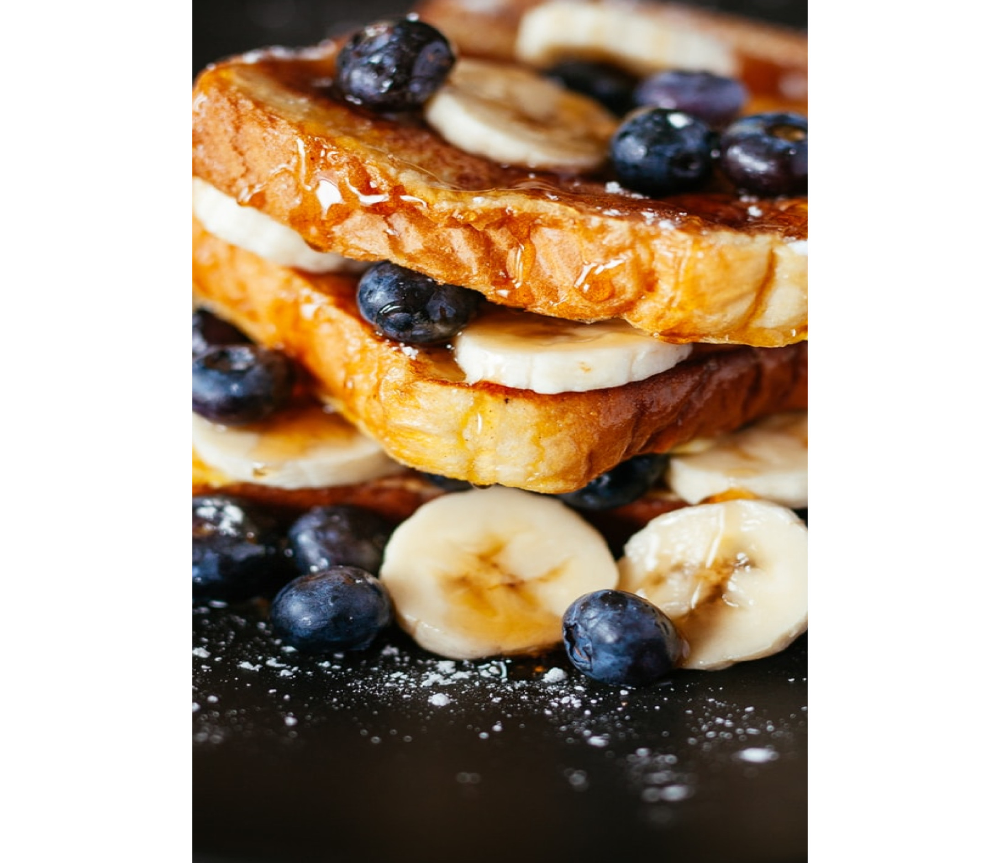

Fruit Sandwich
Our Fruit Sandwich, Perfect for Morning Start Made with 100% Whole Wheat Bread (No Flour), 90% of Seasonal Fruit & 10% of Fresh Honey

No Cheese Pasta
Our No Cheese Pasta, Perfect for Lunch Made with 99% Whole Wheat Pasta, Fresh Vagitables Some Necessary Masala And Milk/ Butter.

Protein Soup
Our Protein Soup, Perfect for Dinner Made with 25% Animal Protein, 20% Vegetable Protein, 15% Fat, 20% of Vitamins & 20% of Water.